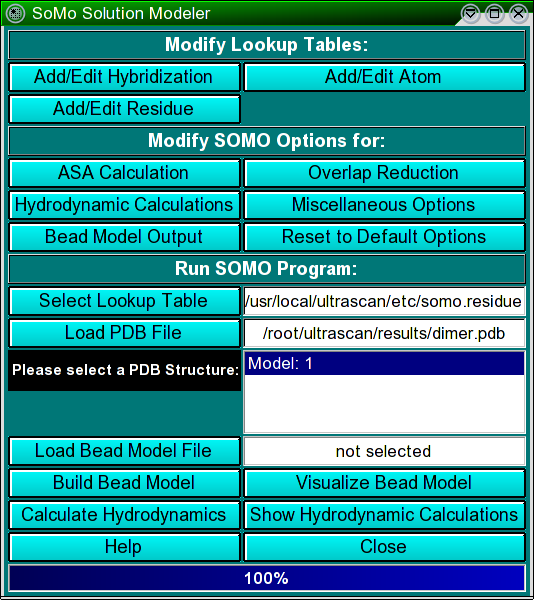
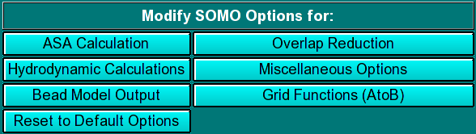

| |
Manual |

The SOMO (SOlution MOdeller) module of UltraScan is a bead modelling utility that was originally developed by the Rocco and Byron labs, respectively at the Istituto Nazionale per la Ricerca sul Cancro (IST, Genova, Italy) and at the University of Glasgow (Glasgow, Scotland, UK). The original code was mainly written by B. Spotorno, G. Tassara, N. Rai and M. Nollmann. SOMO is based on a reduced representation of a biomacromolecule, starting from its atomic coordinates, as a set of non-overlapping beads of different radii, from which the hydrodynamic properties can be calculated using the Garcia de la Torre-Bloomfield rigid-body approach (García de la Torre and Bloomfield, Q. Rev. Biophys. 14:81-139, 1981). The reduced representation is afforded by grouping together atoms and substituting them with a bead of the same volume, appropriately positioned. Importantly, the volume of the water of hydration theoretically bound to each group of atoms can be then added to each bead. The overlaps between the beads are then removed in sequential steps, but preserving as much as possible the original surface envelope of the bead model. The method has been fully validated and reported in the literature (Rai et al., Structure 13:723-734, 2005; Brookes et al., Eur. Biophys. J., in press, 2009). Among the main advantages of this method over shell-modelling and grid-based procedures are a better treatment of the hydration water and the preservation of a direct correspondence between beads and original residues. For instance, the latter feature could be used to include flexibility effects into the computations. Furthermore, by identifying and excluding from the hydrodynamic computations beads that are buried and thus non in contact with the solvent, a large span in the size of the structures that can be analysed with this method without loss of precision is obtained: currently, structures from 5K to 250K have been successfully studied.
Modify Lookup Tables:
 |
In this section you can define the hybridizations, atoms and residues
that need to be interpreted as beads in the bead model generation.
These parameters are collected in different tables that are used
as the components from which the bead sizes and positions are calculated.
PDB structures can then be converted to bead models based on the bead
parameters defined here.
|
Modify SOMO Options:
|  |
In this section you can set all options for different steps in the program.
These options are saved in a system wide config file $ULTRASCAN/etc/somo.configEvery time you close the SOMO program, the currently defined options will be saved in $HOME/ultrascan/etc/somo.configwhere they will be reloaded from upon startup.
|
Run SOMO Program:
 |
These functions control the execution of the SOMO program, whose progress is
recorded in the right-side main window. The first step is to select a lookup table
by clicking on Select Lookup Table (default: somo.residue).
You can create multiple lookup tables for different conditions. The lookup table
needs to contain all atoms and residues defined in your molecule to be loaded in
the next step. By default, SOMO will automatically load the last used *.residue table.
As soon as the lookup table has been successfully loaded, the Load PDB File
button will become active and you can load a PDB structure file from
NMR or X-ray crystallography experiments. Selecting a PBD file will also
automatically call the molecular visualization program RasMol (Sayle RA, Milner-
White EJ. RasMol: biomolecular graphics for all. Trends Biochem. Sci. 20:374-376,
1995) which will display the structure(s) in a pop-up window. RasMol
needs to be installed in $ULTRASCAN/binfor 32 bit machines, and $ULTRASCAN/bin64for 64 bit platforms. You can get a copy of RasMol from http://www.umass.edu/microbio/rasmol/ or from http://openrasmol.org/#Software. The PDB file can contain multiple models and if so, multiple models will be displayed by RasMol and in the list box. In this case, you can select just a single model, or multiple models by holding the crtl key while clicking on the models' names (crtl-A selects all models). If multiple models are selected, all subsequent operations are carried out sequentially on the selected models. Once one or multiple models are selected, the Build SOMO Bead Model and Build Grid Bead Model buttons will become active, offering two alternative ways of generating a bead model based on the settings selected above. Once bead model(s) generation is completed, the progress bar will be at 100% and the bead model(s) can be visualized with RasMol by clicking on Visualize Bead Model. The results of the ASA computations can also be visualized in a pop-up window by clicking on the Show ASA Results button. Alternatively, you can skip all of these steps and load a previously generated bead model by clicking on Load Bead Model File from the menu. In this case, and if the model was generated/saved in the SOMO format, the various settings/parameters used in model generation will be displayed in the right-side main window. The hydrodynamic parameters can be then determined by clicking on Calculate Hydrodynamics. A partial list of parameters can be seen in a pop-up window as soon as the calculations are completed by clicking on Show Hydrodynamic Calculations. A full list of all the parameters is also available as a text file, which can be opened from the results' pop-up window. Operations can be halted at any moment by clicking on the Stop button. To avoid inadvertendly loosing data, the Close button will not immediately close SOMO, but confirmation will be required in a pop-up window. |
This document is part of the UltraScan Software Documentation
distribution.
Copyright © notice.
The latest version of this document can always be found at:
http://www.ultrascan.uthscsa.edu
Last modified on August 26, 2008.
{kind=link}
{kind=link}
{kind=link}